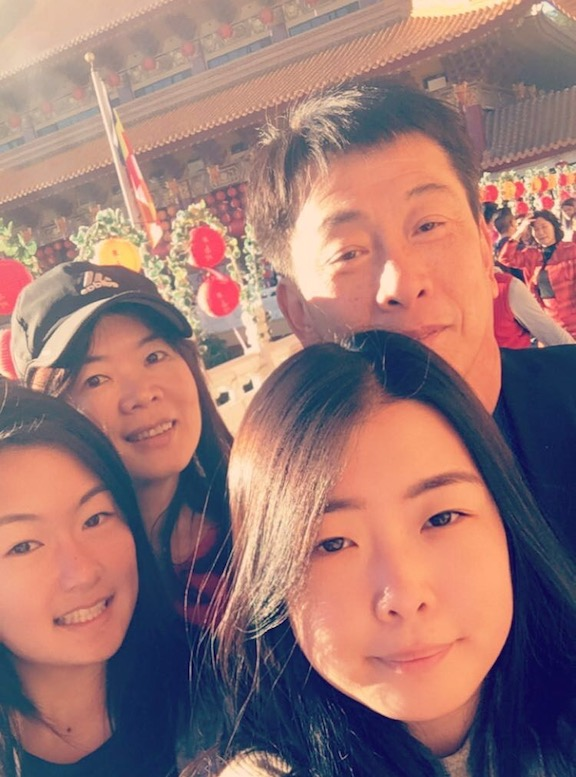

I'm currently working towards a Master's in Public Policy with an interest in Education Policy and a Master's in Information with focus towards Data Science. Previously, I completed my B.A. at California State University, Long Beach, where I studied Political Science with a concentration in Global Politics. I love traveling to new places, learning about new cultures, and trying new foods.
Scroll through my gallery below to see the places I've been, my friends and family, and my two orange cats, Cheezit and Cheetoz.


